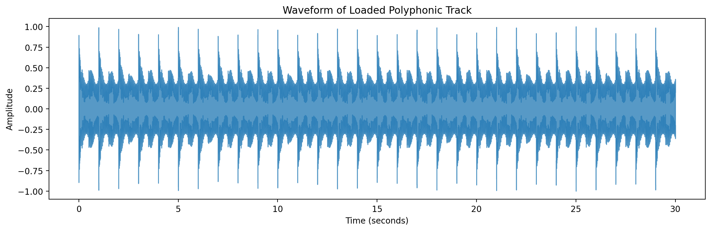

Extract Stems¶
This notebook demonstrates how you can use DrumScript to upload an audio file and extract the drum part(s)
from pathlib import Path
import ipywidgets as widgets
import librosa
import librosa.display
import matplotlib.pyplot as plt
import numpy as np
import soundfile as sf
from IPython.display import display
import drumscript as ds
from drumscript.notation_generator.constants import SAMPLE_RATE
# ------------------------------------------------------------------------------------
date/time: 2026-05-12 15:15:42.826427
# ------------------------------------------------------------------------------------
date/time: 2026-05-12 15:15:42.828747
# OPTION 1: GUI File Upload Widget
# Run this cell to display the upload button.
# You can upload a polyphonic .wav or .mp3 file here.
# Check if we are in the developer repo by looking for pyproject.toml three levels up
expected_repo_root = Path("../../../")
current_dir = Path.cwd()
repo_root = current_dir
while not (repo_root / "pyproject.toml").exists() and repo_root.parent != repo_root:
repo_root = repo_root.parent
if (repo_root / "pyproject.toml").exists():
# Developer Mode: Route files to root directories
base_input_dir = repo_root / "test_audio" / "synthetic_audio"
base_output_dir = repo_root / "outputs" / "processed_stems" / "drumscript"
else:
# End-User Mode: OS-agnostic fallback
base_input_dir = repo_root / "test_audio" / "synthetic_audio"
base_output_dir = current_dir / "outputs" / "processed_stems"
if (expected_repo_root / "pyproject.toml").exists():
# Developer Mode: Route files to root directories to avoid Sphinx build pollution
base_input_dir = repo_root / "test_audio" / "synthetic_audio"
base_output_dir = expected_repo_root / "outputs" / "processed_stems"
else:
# End-User Mode: Route to the current working directory (OS-agnostic fallback)
base_input_dir = repo_root / "test_audio" / "synthetic_audio"
base_output_dir = Path.cwd() / "outputs" / "processed_stems"
# Ensure directories exist and create if they do not
base_input_dir.mkdir(parents=True, exist_ok=True)
base_output_dir.mkdir(parents=True, exist_ok=True)
# OPTIONAL: Uncomment and amend the line below to explicitly set your own output destination path
# base_output_dir = Path("/path/to/your/custom/folder")
base_output_dir.mkdir(parents=True, exist_ok=True)
print(f"Input directory set to: {base_input_dir.resolve()}")
print(f"Output directory set to: {base_output_dir.resolve()}")
upload_widget = widgets.FileUpload(accept=".wav, .mp3, .flac, .ogg", multiple=False, description="Upload Audio ... ")
print("\nUpload a polyphonic audio file, or skip uploading to use the generated 30s example below.")
display(upload_widget)
Input directory set to: /Users/victoriamckinney/Library/Visual Studio Projects/DrumScript/test_audio/synthetic_audio
Output directory set to: /Users/victoriamckinney/Library/Visual Studio Projects/DrumScript/outputs/processed_stems
Upload a polyphonic audio file, or skip uploading to use the generated 30s example below.
# OPTION 2: Generate synthetic polyphonic audio using Python (Fallback)
def generate_polyphonic_track(filepath: Path, sr: int = SAMPLE_RATE, duration: float = 30.0):
"""Generates a continuous polyphonic track (drums + synth bass + chords) for stem extraction testing."""
t = np.linspace(0, duration, int(sr * duration), False)
# 1. Synth Bassline (Rich bass with a harmonic at 110Hz and 220Hz)
# bassline = 0.5 * np.sin(2 * np.pi * 110.0 * t)
bassline = 0.4 * np.sin(2 * np.pi * 110.0 * t) + 0.2 * np.sin(2 * np.pi * 220.0 * t)
# NEW: 2. Synth Chords (A minor triad: 440Hz, 523.25Hz, 659.25Hz)
chords = np.zeros_like(t)
for freq in [440.0, 523.25, 659.25]:
chords += 0.15 * np.sin(2 * np.pi * freq * t) # Fundamental
chords += 0.05 * np.sin(2 * np.pi * freq * 2.0 * t) # 1st Harmonic for brightness
# Apply a rhythmic pulsing envelope to the chords (2 pulses per second)
chord_env = 0.5 * (1 + np.sin(2 * np.pi * 2.0 * t))
chords = chords * chord_env
# 3. Kick Drum (Hits every 1.0s continuously)
kick = np.zeros_like(t)
for hit_time in np.arange(0.0, duration, 1.0):
hit_start = int(hit_time * sr)
hit_end = min(hit_start + int(0.3 * sr), len(t))
t_kick = np.linspace(0, 0.3, hit_end - hit_start, False)
kick_freqs = np.linspace(150, 40, len(t_kick))
kick_env = np.exp(-15 * t_kick)
kick[hit_start:hit_end] += np.sin(2 * np.pi * kick_freqs * t_kick) * kick_env
# 4. Hi-hat (Hits every 0.5s continuously)
hat = np.zeros_like(t)
for hit_time in np.arange(0.0, duration, 0.5):
hit_start = int(hit_time * sr)
hit_end = min(hit_start + int(0.1 * sr), len(t))
t_hat = np.linspace(0, 0.1, hit_end - hit_start, False)
noise = np.random.uniform(-1, 1, len(t_hat))
hat_env = np.exp(-30 * t_hat)
hat[hit_start:hit_end] += noise * hat_env * 0.2
# Mix all elements and normalise
# mix = bassline + kick + hat
mix = bassline + chords + kick + hat
mix = mix / np.max(np.abs(mix))
# Save using the absolute path string
sf.write(str(filepath.resolve()), mix, sr)
print(f"Generated {duration}s polyphonic test track at: {filepath.resolve()}")
audio_path = base_input_dir / "synthetic_polyphonic.wav"
if upload_widget.value:
if isinstance(upload_widget.value, dict):
filename = list(upload_widget.value.keys())[0]
content = upload_widget.value[filename]["content"]
else:
filename = upload_widget.value[0]["name"]
content = upload_widget.value[0]["content"]
audio_path = base_input_dir / filename
with open(audio_path, "wb") as f:
f.write(content)
print(f"Saved and using uploaded file: {filename}")
# Adjust output directory for specific upload
base_output_dir = base_input_dir / f"{Path(filename).stem}_stems"
base_output_dir.mkdir(parents=True, exist_ok=True)
else:
print("No file uploaded. Falling back to synthetic polyphonic track...")
generate_polyphonic_track(audio_path)
# --- 5. Processing & Visualisation ---
try:
if not audio_path.exists():
raise FileNotFoundError(f"The audio file could not be found at: {audio_path.resolve()}")
# Use explicit absolute path string to prevent Demucs from parsing relative to CWD
absolute_audio_path_str = str(audio_path.resolve())
absolute_output_dir_str = str(base_output_dir.resolve())
audio, sr = ds.load_audio(absolute_audio_path_str)
print(f"Audio loaded successfully! Shape: {audio.shape}, Sample Rate: {sr}")
plt.figure(figsize=(12, 4))
librosa.display.waveshow(audio, sr=sr, alpha=0.75)
plt.title("Waveform of Loaded Polyphonic Track")
plt.xlabel("Time (seconds)")
plt.ylabel("Amplitude")
plt.tight_layout()
plt.show()
# --- Extract Stems using absolute paths ---
print(f"Saving extracted stems to: {absolute_output_dir_str}")
# stems = ds.split_stems(absolute_audio_path_str, output_dir=absolute_output_dir_str)
except FileNotFoundError as fnf_error:
print(f"Error: {fnf_error}\nPlease check the file path.")
except Exception as e:
print(f"Audio format or decoding error: {e}\nThe selected file might be broken or in an unsupported format.")
No file uploaded. Falling back to synthetic polyphonic track...
Generated 30.0s polyphonic test track at: /Users/victoriamckinney/Library/Visual Studio Projects/DrumScript/test_audio/synthetic_audio/synthetic_polyphonic.wav
Audio loaded successfully! Shape: (1323000,), Sample Rate: 44100
{kind=link}

Saving extracted stems to: /Users/victoriamckinney/Library/Visual Studio Projects/DrumScript/outputs/processed_stems
split_stems = ds.extract_stems(audio_path)
Starting Demucs separation for: /Users/victoriamckinney/Library/Visual Studio Projects/DrumScript/test_audio/synthetic_audio/synthetic_polyphonic.wav...
Demucs separation finished in 0.23 minutes.
Drum stem extracted successfully to: /Users/victoriamckinney/Library/Visual Studio Projects/DrumScript/docs/guide/interactive/stems/htdemucs/synthetic_polyphonic/drums.wav
Starting Demucs separation for: synthetic_polyphonic.wav...
Demucs raw separation finished in 0.22 minutes.
Separation complete. Outputs saved in: /Users/victoriamckinney/Library/Visual Studio Projects/DrumScript/docs/guide/interactive/stems/synthetic_polyphonic